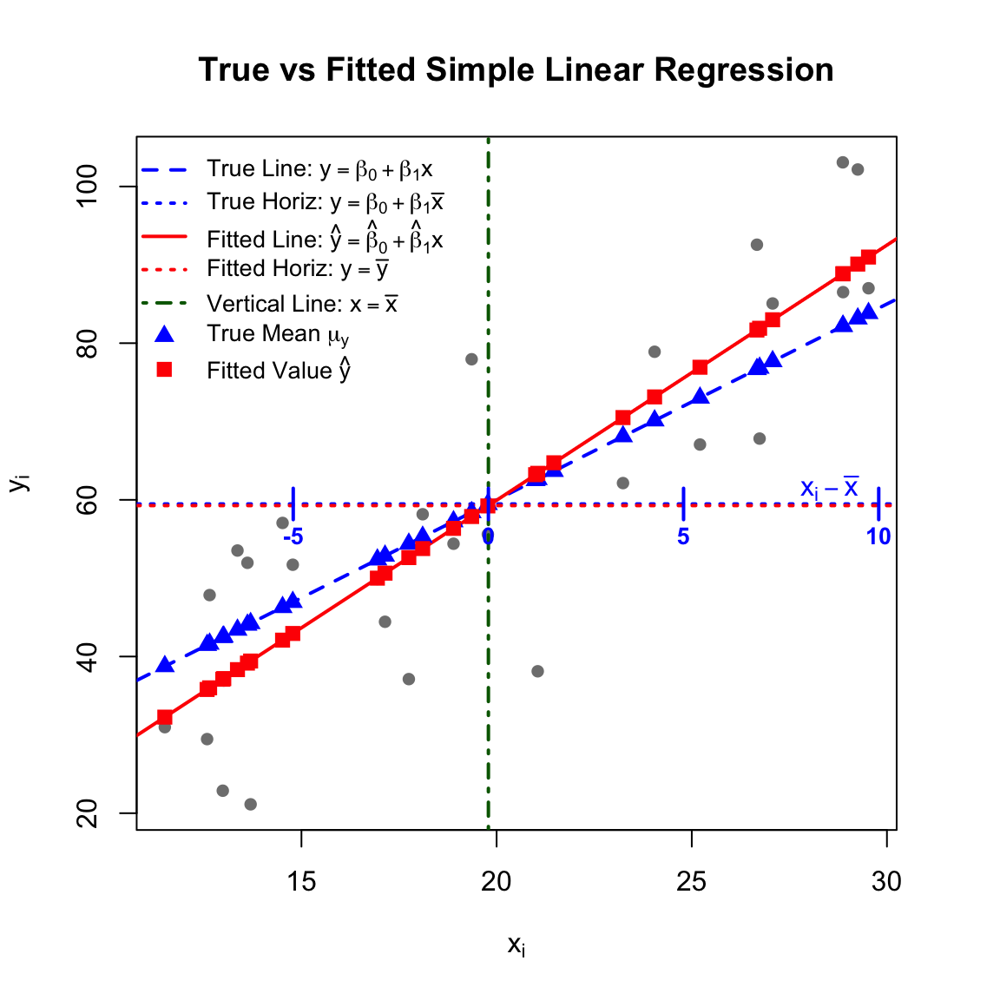
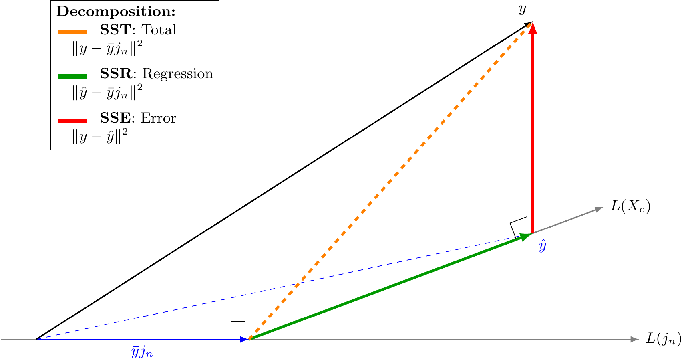
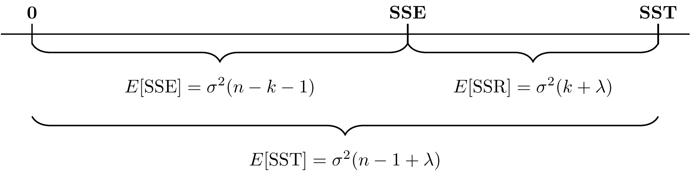
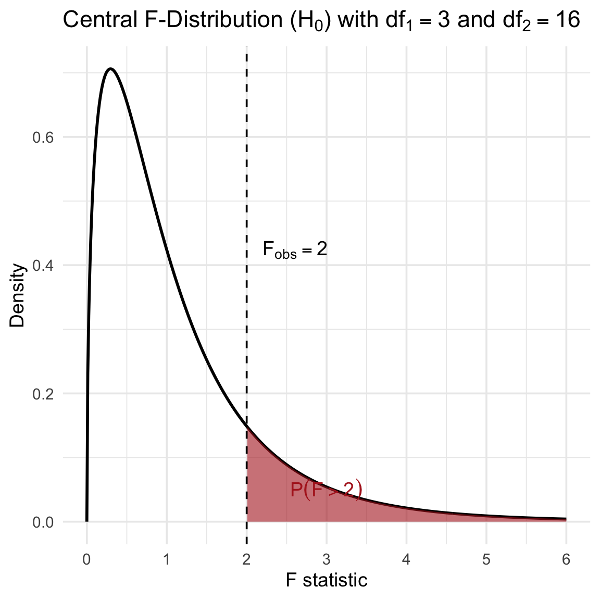
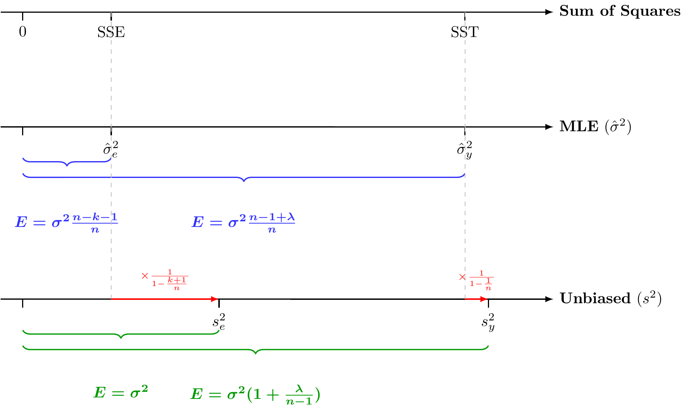
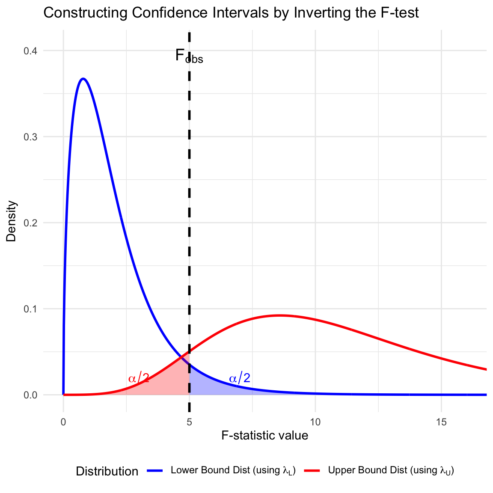
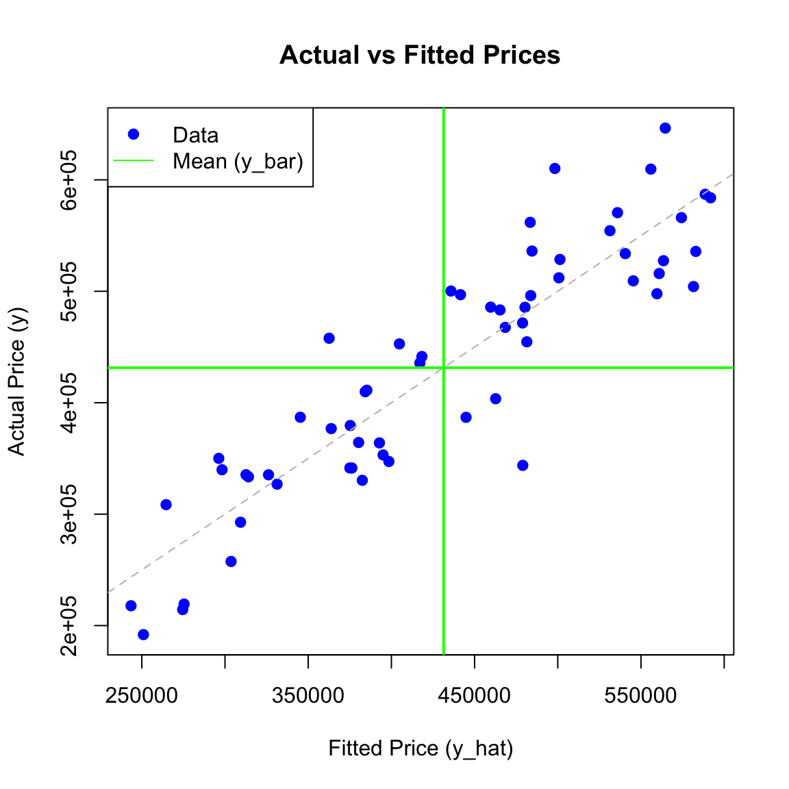

Suppose that on a random sample of \(n\) units (patients, animals, trees, etc.) we observe a response variable \(Y\) and explanatory variables \(X_{1},...,X_{k}\). Our data are then \((y_{i},x_{i1},...,x_{ik})\), \(i=1,...,n\), or in vector/matrix form \(y, x_{1},...,x_{k}\) where \(y=(y_{1},...,y_{n})\) and \(x_{j}=(x_{1j},...,x_{nj})^{T}\) or \(y, X\) where \(X=(x_{1},...,x_{k})\).
Either by design or by conditioning on their observed values, \(x_{1},...,x_{k}\) are regarded as vectors of known constants. The linear model in its classical form makes the following assumptions:
Assumptions on Linear Models
A1. (Additive Error)\(y=\mu+e\) where \(e=(e_{1},...,e_{n})^{T}\) is an unobserved random vector with \(E(e)=0\). This implies that \(\mu=E(y)\) is the unknown mean of \(y\).
A2. (Linearity)\(\mu=\beta_{1}x_{1}+\cdot\cdot\cdot+\beta_{k}x_{k}=X\beta\) where \(\beta_{1},...,\beta_{k}\) are unknown parameters. This assumption says that \(E(y)=\mu\in\text{Col}(X)\) (lies in the column space of \(X\)); i.e., it is a linear combination of explanatory vectors \(x_{1},...,x_{k}\) with coefficients the unknown parameters in \(\beta=(\beta_{1},...,\beta_{k})^{T}\). Note that it is linear in \(\beta_{1},...,\beta_{k}\), not necessarily in the \(x\)’s.
A3. (Independence)\(e_{1},...,e_{n}\) are independent random variables (and therefore so are \(y_{1},...,y_{n})\).
A4. (Homoscedasticity)\(e_{1},...,e_{n}\) all have the same variance \(\sigma^{2}\); that is, \(\text{Var}(e_{1})=\cdot\cdot\cdot=\text{Var}(e_{n})=\sigma^{2}\) which implies \(\text{Var}(y_{1})=\cdot\cdot\cdot=\text{Var}(y_{n})=\sigma^{2}\).
This is expressed compactly as: \[y=X\beta+e\] where \(X\) is the design matrix, and \(e \sim N_n(0, \sigma^2 I)\). Alternatively: \[y=\beta_{0}j_{n}+\beta_{1}x_{1}+\cdot\cdot\cdot+\beta_{k}x_{k}+e\]
Taken together, all five assumptions can be stated more succinctly as: \[y\sim N_{n}(X\beta,\sigma^{2}I)\] with the mean vector \(\mu_{y}=X\beta\in \text{Col}(X)\).
ImportantCoefficients and Variance of Reduced Models
The effect of a parameter and the magnitude of the error variance depend upon what other explanatory variables are present in the model. For example, the coefficients \(\beta_{0}, \beta_{1}\) and error standard deviation \(\sigma\) in the model: \[y=\beta_{0}j_{n}+\beta_{1}x_{1}+\beta_{2}x_{2}+e, \quad \text{Var}(e) = \sigma^2 I\] will typically be different than \(\beta_{0}^{*}, \beta_{1}^{*}\) and \(\sigma^*\) in the model: \[y=\beta_{0}^{*}j_{n}+\beta_{1}^{*}x_{1}+e^*, \quad \text{Var}(e^*) = (\sigma^*)^2 I\] In this context, \(\beta_0^*\) and \(\beta_1^*\) are the population-projected coefficients of the full model. Furthermore, \(\sigma^*\) will typically be larger than \(\sigma\), as the error term \(e^*\) absorbs the variation previously explained by \(x_2\).
Important
We will first consider the case that \(\text{rank}(X)=k+1\).
6.1.3 Least Squares Estimator of \(\beta\) and Fitted Value \(\hat Y\)
Definition 6.1 (Least Squares Estimator) The Least Squares Estimator (LSE) of \(\beta\), denoted as \(\hat{\beta}\), is the vector that minimizes the Sum of Squared Errors (SSE), which measures the discrepancy between the observed responses \(y\) and the fitted values \(X\hat{\beta}\). \[
Q(\beta) = \sum_{i=1}^n (y_i - x_i^T \beta)^2 = (y - X\beta)'(y - X\beta)
\]
Theorem 6.1 (Least Squares Estimator) Consider the linear model \(y = X\beta + e\), where \(X\) is of full column rank. The Ordinary Least Squares (OLS) estimator \(\hat{\beta}\) is given by the closed-form solution:
\[\hat{\beta} = (X'X)^{-1}X'y\]
Consequently, the vector of fitted values \(\hat{y}\) is the orthogonal projection of \(y\) onto \(\text{Col}(X)\):
\[\hat{y} = X\hat{\beta} = Hy\]
where \(H = X(X'X)^{-1}X'\) is the orthogonal projection matrix (hat matrix).
Proof. The derivation relies on the geometry of orthogonal projections.
Obtaining the Fitted Values \(\hat{y}\)
In the linear model, the systematic component \(E[y]\) is constrained to lie in the column space of \(X\), denoted as \(\text{Col}(X)\). We seek the vector in \(\text{Col}(X)\) that is “closest” to the observed data \(y\). This vector is the orthogonal projection of \(y\) onto \(\text{Col}(X)\), denoted as \(\hat{y}\). Using the projection matrix \(H = X(X'X)^{-1}X'\), we have:
\[\hat{y} = Hy = X(X'X)^{-1}X' y\]
Obtaining \(\hat{\beta}\) by Solving \(X\beta = \hat{y}\)
Since \(\hat{y}\) is a projection onto \(\text{Col}(X)\), the system \(X\hat{\beta} = \hat{y}\) is consistent. To isolate \(\hat{\beta}\), we pre-multiply both sides by \((X'X)^{-1}X'\):
Finally, we express the estimator in terms of the observed \(y\). Because \(\hat{y}\) is an orthogonal projection, the residual \(y - \hat{y}\) is orthogonal to the columns of \(X\), implying \(X'\hat{y} = X'y\). Substituting this into the equation above yields the result:
\[\hat{\beta} = (X'X)^{-1}X'y\]
6.1.4 Properties of the Estimator \(\hat \beta\)
Theorem 6.2 (Unbiasedness of \(\hat \beta\)) If \(E(y)=X\beta\), then \(\hat{\beta}\) is an unbiased estimator for \(\beta\).
Theorem 6.3 (Variance of \(\hat \beta\)) If \(\text{Var}(y)=\sigma^{2}I\), the covariance matrix for \(\hat{\beta}\) is given by \(\sigma^{2}(X^{\prime}X)^{-1}\).
Note: These theorems require no assumption of normality.
6.2 Best Linear Unbiased Estimator (BLUE)
Theorem 6.4 (Gauss-Markov Theorem) If \(E(y)=X\beta\) and \(\text{Var}(y)=\sigma^{2}I\), the least-squares estimators \(\hat{\beta}_{j}, j=0,1,...,k\) have minimum variance among all linear unbiased estimators.
Proof. We consider a linear estimator \(Ay\) of \(\beta\) and seek the matrix \(A\) for which \(Ay\) is a minimum variance unbiased estimator.
Unbiasedness Condition:
In order for \(Ay\) to be an unbiased estimator of \(\beta\), we must have \(E(Ay)=\beta\). Using the assumption \(E(y)=X\beta\), this is expressed as: \[E(Ay) = A E(y) = AX\beta = \beta\] which implies the condition \(AX=I_{k+1}\) since the relationship must hold for any \(\beta\).
Minimizing Variance:
The covariance matrix for the estimator \(Ay\) is: \[\text{Var}(Ay) = A \text{Var}(y) A' = A(\sigma^2 I) A' = \sigma^2 AA'\] We need to choose \(A\) (subject to \(AX=I\)) so that the diagonal elements of \(AA'\) are minimized.
To relate \(Ay\) to \(\hat{\beta}=(X'X)^{-1}X'y\), we define \(\hat{A} = (X'X)^{-1}X'\) and write \(A = (A - \hat{A}) + \hat{A}\). Then: \[AA' = [(A - \hat{A}) + \hat{A}] [(A - \hat{A}) + \hat{A}]'\] Expanding this, the cross terms vanish because \((A - \hat{A})\hat{A}' = A\hat{A}' - \hat{A}\hat{A}'\). Note that \(\hat{A}\hat{A}' = (X'X)^{-1}X'X(X'X)^{-1} = (X'X)^{-1}\). Also, \(A\hat{A}' = A X (X'X)^{-1} = I (X'X)^{-1} = (X'X)^{-1}\) (since \(AX=I\)). Thus, \((A - \hat{A})\hat{A}' = 0\).
The expansion simplifies to: \[AA' = (A - \hat{A})(A - \hat{A})' + \hat{A}\hat{A}'\] The matrix \((A - \hat{A})(A - \hat{A})'\) is positive semidefinite, meaning its diagonal elements are non-negative. To minimize the diagonal of \(AA'\), we must set \(A - \hat{A} = 0\), which implies \(A = \hat{A}\).
Thus, the minimum variance estimator is: \[Ay = (X'X)^{-1}X'y = \hat{\beta}\]
6.2.1 Notes on Gauss-markov
Distributional Generality: The remarkable feature of the Gauss-Markov theorem is that it holds for any distribution of \(y\); normality is not required. The only assumptions used are linearity (\(E(y)=X\beta\)) and homoscedasticity (\(\text{Var}(y)=\sigma^2 I\)).
Extension to All Linear Combinations: The theorem extends beyond just the parameter vector \(\beta\) to any linear combination of the parameters.
Scaling Invariance: The predictions made by the model are invariant to the scaling of the explanatory variables.
Corollary 6.1 (BLUE for All Linear Combinations) If \(E(y)=X\beta\) and \(\text{Var}(y)=\sigma^{2}I\), the best linear unbiased estimator of the scalar \(a'\beta\) is \(a'\hat{\beta}\), where \(\hat{\beta}\) is the least-squares estimator.
Proof. Let \(\tilde{\beta} = Ay\) be any other linear unbiased estimator of \(\beta\). The variance of the linear combination \(a'\tilde{\beta}\) is: \[
\frac{1}{\sigma^2}\text{Var}(a'\tilde{\beta}) = \frac{1}{\sigma^2}\text{Var}(a'Ay) = a'AA'a
\] From the proof of the Gauss-Markov theorem, we established that \(AA' = (A-\hat{A})(A-\hat{A})' + (X'X)^{-1}\) where \(\hat{A} = (X'X)^{-1}X'\). Substituting this into the variance equation: \[
a'AA'a = a'(A-\hat{A})(A-\hat{A})'a + a'(X'X)^{-1}a
\] The term \(a'(A-\hat{A})(A-\hat{A})'a\) is a quadratic form with a positive semidefinite matrix, so it is always non-negative. Therefore: \[
a'AA'a \ge a'(X'X)^{-1}a = \frac{1}{\sigma^2}\text{Var}(a'\hat{\beta})
\] The variance is minimized when \(A=\hat{A}\) (specifically when the first term is zero), proving that \(a'\hat{\beta}\) has the minimum variance among all linear unbiased estimators.
Theorem 6.5 (Scaling Explanatory Variables) If \(x=(1,x_{1},...,x_{k})'\) and \(z=(1,c_{1}x_{1},...,c_{k}x_{k})'\), then the fitted values are identical: \(\hat{y} = \hat{\beta}'x = \hat{\beta}_{z}'z\).
Proof. Let \(D = \text{diag}(1, c_1, ..., c_k)\) such that the design matrix is transformed to \(Z = XD\). The LSE for the transformed data is: \[
\begin{aligned}
\hat{\beta}_z &= (Z'Z)^{-1}Z'y = [(XD)'(XD)]^{-1}(XD)'y \\
&= D^{-1}(X'X)^{-1}(D')^{-1}D'X'y \\
&= D^{-1}(X'X)^{-1}X'y = D^{-1}\hat{\beta}
\end{aligned}
\] . Then, the prediction is: \[
\hat{\beta}_z' z = (D^{-1}\hat{\beta})' (Dx) = \hat{\beta}' (D^{-1})' D x = \hat{\beta}'x
\] .
6.2.2 Limitations: Restriction to Unbiased Estimators
It is crucial to recognize that the Gauss-Markov theorem only guarantees optimality within the class of linear and unbiased estimators.
Assumption Sensitivity: If the assumptions of linearity (\(E(y)=X\beta\)) and homoscedasticity (\(\text{Var}(y)=\sigma^2 I\)) do not hold, \(\hat{\beta}\) may be biased or may have a larger variance than other estimators.
Unbiasedness Constraint: The theorem does not compare \(\hat{\beta}\) to biased estimators. It is possible for a biased estimator (e.g., shrinkage estimators) to have a smaller Mean Squared Error (MSE) than the BLUE by accepting some bias to significantly reduce variance. The LSE is only “best” (minimum variance) among those estimators that satisfy the unbiasedness constraint.
6.3 Unbiased Estimator of Error Variance
We estimate \(\sigma^{2}\) by the residual mean square:
Alternatively, SSE can be written as: \[\text{SSE} = y'y - \hat{\beta}'X'y\] This is often useful for computation (\(y'y\) is the total sum of squares of the raw data).
6.3.1 Unbiasedness of \(s^2\)
Theorem 6.6 (Unbiasedness of s-squared) If \(s^{2}\) is defined as above, and if \(E(y)=X\beta\) and \(\text{Var}(y)=\sigma^{2}I\), then \(E(s^{2})=\sigma^{2}\).
Proof. We use the Hat Matrix \(H = X(X'X)^{-1}X'\), which projects \(y\) onto \(\text{Col}(X)\). Thus, \(\hat{y} = Hy\). The residuals are \(y - \hat{y} = (I - H)y\). The Sum of Squared Errors is: \[\text{SSE} = \|(I-H)y\|^2 = y'(I-H)'(I-H)y\] Since \(H\) is symmetric and idempotent, \((I-H)\) is also symmetric and idempotent. Thus: \[\text{SSE} = y'(I-H)y\]
To find the expectation, we use the trace trick for quadratic forms: \(E[y'Ay] = \text{tr}(A\text{Var}(y)) + E[y]'A E[y]\). \[
\begin{aligned}
E(\text{SSE}) &= E[y'(I-H)y] \\
&= \text{tr}((I-H)\sigma^2 I) + (X\beta)'(I-H)(X\beta) \\
&= \sigma^2 \text{tr}(I-H) + \beta'X'(I-H)X\beta
\end{aligned}
\]Trace Term:\(\text{tr}(I_n - H) = \text{tr}(I_n) - \text{tr}(H) = n - (k+1)\), since \(\text{tr}(H) = \text{tr}(X(X'X)^{-1}X') = \text{tr}((X'X)^{-1}X'X) = \text{tr}(I_{k+1}) = k+1\).
Non-centrality Term: Since \(HX = X\), we have \((I-H)X = 0\). Therefore, the second term vanishes: \(\beta'X'(I-H)X\beta = 0\).
Combining these: \[E(\text{SSE}) = \sigma^2(n - k - 1)\] Dividing by the degrees of freedom \((n-k-1)\), we get \(E(s^2) = \sigma^2\).
6.4 Distributions Under Normality
If we add Assumption A5 (\(y \sim N_n(X\beta, \sigma^2 I)\)), we can derive the exact sampling distributions.
Corollary 6.2 (Estimated Covariance of Beta) An unbiased estimator of \(\text{Cov}(\hat{\beta})\) is given by: \[\widehat{\text{Cov}}(\hat{\beta}) = s^{2}(X'X)^{-1}\]
Theorem 6.7 (Sampling Distributions) Under assumptions A1-A5:
Proof. Part (i): Since \(\hat{\beta} = (X'X)^{-1}X'y\) is a linear transformation of the normal vector \(y\), it is also normally distributed. We already established its mean and variance in Theorem 6.2 and Theorem 6.3.
Part (ii): We showed \(\text{SSE} = y'(I-H)y\). Since \((I-H)\) is idempotent with rank \(n-k-1\), and \((I-H)X\beta = 0\), by the theory of quadratic forms in normal variables, \(\text{SSE}/\sigma^2 \sim \chi^2(n-k-1)\).
Part (iii):\(\hat{\beta}\) depends on \(Hy\) (or \(X'y\)), while \(s^2\) depends on \((I-H)y\). Since \(H(I-H) = H - H^2 = 0\), the linear forms defining the estimator and the residuals are orthogonal. For normal vectors, zero covariance implies independence.
6.5 Maximum Likelihood Estimator (MLE)
Theorem 6.8 (MLE for Linear Regression) If \(y \sim N_n(X\beta, \sigma^2 I)\), the Maximum Likelihood Estimators (MLE) for the coefficients and the error variance are:
Derivation of Error Variance (\(\hat{\sigma}^2_{\text{MLE},e}\))
The probability density function for the multivariate normal distribution \(y \sim N(X\beta, \sigma^2 I)\) is: \[f(y) = (2\pi\sigma^2)^{-n/2} \exp\left( -\frac{1}{2\sigma^2}(y - X\beta)'(y - X\beta) \right)\]
The log-likelihood function is \(\ln L = \ln f(y)\): \[\ln L(\beta, \sigma^2) = -\frac{n}{2}\ln(2\pi) - \frac{n}{2}\ln(\sigma^2) - \frac{1}{2\sigma^2}(y - X\beta)'(y - X\beta)\]
First, we maximize with respect to \(\beta\). Since only the last term involves \(\beta\), maximizing the likelihood is equivalent to minimizing the sum of squared errors: \[\text{SSE}(\beta) = (y - X\beta)'(y - X\beta)\] This yields the standard Least Squares estimator \(\hat{\beta} = (X'X)^{-1}X'y\). Substituting this back into the SSE term gives the minimized sum of squares, \(\text{SSE}\).
Next, we maximize with respect to the variance \(\sigma^2\). Let \(v = \sigma^2\). The log-likelihood becomes: \[\ln L(v) = C - \frac{n}{2}\ln(v) - \frac{\text{SSE}}{2v}\]
Differentiating with respect to \(v\): \[\frac{\partial \ln L}{\partial v} = -\frac{n}{2v} + \frac{\text{SSE}}{2v^2}\]
Setting the derivative to zero to find the critical point: \[-\frac{n}{2\hat{v}} + \frac{\text{SSE}}{2\hat{v}^2} = 0\]\[\frac{n}{2\hat{v}} = \frac{\text{SSE}}{2\hat{v}^2}\]\[n = \frac{\text{SSE}}{\hat{v}} \implies \hat{v} = \frac{\text{SSE}}{n}\]
Thus, the MLE for the error variance is: \[\hat{\sigma}^2_{\text{MLE},e} = \frac{\text{SSE}}{n}\]
Derivation of Total Variance (\(\hat{\sigma}^2_{\text{MLE},y}\))
Under the Null Model (intercept only), we assume \(y_i \sim N(\mu, \sigma_y^2)\). The design matrix \(X\) is simply a column of ones (\(j_n\)). Maximizing the likelihood for \(\mu\) yields the sample mean \(\hat{\mu} = \bar{y}\).
The term \((y - X\beta)'(y - X\beta)\) simplifies to the Total Sum of Squares: \[\text{SST} = \sum_{i=1}^n (y_i - \bar{y})^2\]
Following the exact same differentiation steps as above (replacing SSE with SST), the MLE for the variance of \(y\) is: \[\hat{\sigma}^2_{\text{MLE},y} = \frac{\text{SST}}{n}\]
Note: The MLEs for variance are biased. They divide by the sample size \(n\), whereas the unbiased estimators (used in standard ANOVA tables) divide by the degrees of freedom (\(n-k-1\) for error, \(n-1\) for total).
6.6 Linear Models in Centered Form
Starting with the original model, let the design matrix be \(X^*=[j_n, X]\), where \(X\) is the \(n \times p\) matrix of predictors excluding the intercept, and let the original coefficients be \(\beta^* = [\beta_0^*, (\beta_1^*)^\top]^\top\). The mean vector \(\mu_y = E(y)\) is: \[\mu_y = X^*\beta^* = [j_n, X] \begin{pmatrix} \beta_0^* \\ \beta_1^* \end{pmatrix} = \beta_0^* j_n + X\beta_1^*\]
We define the centered design matrix \(X_c\) as the projection of \(X\) onto the orthogonal complement of the intercept space: \[X_c = (I - P_{j_n})X = X - P_{j_n}X\]
Because \(P_{j_n} = j_n(j_n^\top j_n)^{-1}j_n^\top\), the term \(P_{j_n}X\) computes the column means, which we can write as \(j_n\bar{x}^\top\), where \(\bar{x}^\top\) is the row vector of means. Rearranging the definition gives: \[X = j_n\bar{x}^\top + X_c\]
Substituting this expression for \(X\) back into our mean vector \(\mu_y\): \[
\begin{aligned}
\mu_y &= \beta_0^* j_n + (j_n\bar{x}^\top + X_c)\beta_1^* \\
&= \beta_0^* j_n + j_n\bar{x}^\top\beta_1^* + X_c\beta_1^* \\
&= j_n(\beta_0^* + \bar{x}^\top\beta_1^*) + X_c\beta_1^*
\end{aligned}
\]
By defining the parameters of the centered model as \(\alpha = \beta_0^* + \bar{x}^\top\beta_1^*\) and \(\beta_1 = \beta_1^*\), the equation simplifies cleanly to: \[\mu_y = \alpha j_n + X_c\beta_1 = [j_n, X_c]\begin{pmatrix}\alpha\\\beta_1\end{pmatrix}\]
Adding the error term, the full centered model is: \[y = \mu_y + \epsilon = j_n\alpha + X_c\beta_1 + \epsilon\]
Orthogonality of \(j_n\) and \(X_c\)
By construction, \(X_c\) is orthogonal to \(j_n\). This is quickly proven using the properties of the idempotent projection matrix \(P_{j_n}\): \[j_n^\top X_c = j_n^\top(I - P_{j_n})X = (j_n^\top - j_n^\top P_{j_n})X = (j_n^\top - j_n^\top)X = 0\]
Orthogonal Projections of the Mean Vector
Because \(j_n\) and \(X_c\) are strictly orthogonal, projecting \(\mu_y\) onto their respective column spaces completely isolates their components: \[
\boxed{P_{j_n}\mu_y = P_{j_n}(j_n\alpha + X_c\beta_1) = j_n\alpha + 0 = \alpha j_n}
\]\[
\boxed{P_{X_c}\mu_y = P_{X_c}(j_n\alpha + X_c\beta_1) = 0 + X_c\beta_1 = X_c\beta_1}
\]
6.7 Least Squares Estimates for Linear Models in Centered Form
Because the column space of the intercept \(j_n\) is strictly orthogonal to the column space of \(X_c\), the total projection of \(y\) onto the combined column space spanned by \([j_n, X_c]\) decomposes into the sum of the independent orthogonal projections onto these two subspaces.
Let \(\hat{y}_0\) denote the projection of \(y\) onto \(j_n\), and \(\hat{y}_1\) denote the projection of \(y\) onto \(X_c\): \[\hat{y}_0 = P_{j_n}y\]\[\hat{y}_1 = P_{X_c}y\]
We can express the total fitted values \(\hat{y}\) as the sum of these orthogonal projections: \[\boxed{\hat{y} = \hat{y}_0 + \hat{y}_1 = P_{j_n}y + P_{X_c}y}\]
Applying the hat matrix based on \(j_n\) and \(X_c\) we obtain that \[\boxed{\hat{y}_0 = P_{j_n}y = j_n(j_n^T j_n)^{-1}j_n^T y = j_n\hat{\alpha}}\]\[\boxed{\hat{y}_1 = P_{X_c}y = X_c(X_c^T X_c)^{-1}X_c^T y = X_c\hat{\beta}_1}\]
By looking at the expressions of \(\hat y_0\) and \(\hat y_1\), we easily isolate the least squares estimators:
\[\boxed{\hat{\alpha} = (j_n^\top j_n)^{-1}j_n^\top y = \bar{y}}\] (The sample mean of \(y\))
\[\boxed{\hat{\beta}_{1} = (X_c^\top X_c)^{-1}X_c^\top y = S_{xx}^{-1}S_{xy}}\] (Using the sample covariance matrix notations)
Recovering the original intercept: \[\hat{\beta}_0^* = \hat{\alpha} - \bar{x}^\top\hat{\beta}_1\]
Code
# 1. Define the True Data-Generating Processset.seed(2)n <-30x <-runif(n, 10, 30)beta_0_true <-10beta_1_true <-2.5# Generate y with random normal errorsy <- beta_0_true + beta_1_true * x +rnorm(n, mean =0, sd =10)# 2. Fit the OLS Modelfit <-lm(y ~ x)beta_0_hat <-coef(fit)[1]beta_1_hat <-coef(fit)[2]# 3. Calculate the necessary means and expected/fitted valuesx_bar <-mean(x)y_bar <-mean(y)y_true_mean <- beta_0_true + beta_1_true * x_barmu_y <- beta_0_true + beta_1_true * x # True mean valuesy_hat <-fitted(fit) # Fitted values# 4. Create the Plot# Expanded right margin slightly to fit the new axis labelpar(mar =c(5, 4, 4, 3) +0.1) plot(x, y, pch =16, col ="gray50", main ="True vs Fitted Simple Linear Regression",xlab =expression(x[i]), ylab =expression(y[i]))# True linear line (blue, dashed)abline(a = beta_0_true, b = beta_1_true, col ="blue", lwd =2, lty =2)# True horizontal line at beta_0 + beta_1 * x_bar (blue, dotted)abline(h = y_true_mean, col ="blue", lwd =2, lty =3)# Fitted linear line (red, solid)abline(fit, col ="red", lwd =2, lty =1)# Fitted horizontal line at \bar{y} (red, dotted)abline(h = y_bar, col ="red", lwd =2, lty =3)# Vertical line at \bar{x} (dark green, dot-dash)abline(v = x_bar, col ="darkgreen", lwd =2, lty =4)# Plot the specific points on the linespoints(x, mu_y, col ="blue", pch =17, cex =1.2) # Solid blue triangles for mu_ypoints(x, y_hat, col ="red", pch =15, cex =1.2) # Solid red squares for y_hat# ---------------------------------------------------------# NEW: Treat true horizontal line as a centered axis (x_i - \bar{x})# ---------------------------------------------------------# Define nice round numbers for the centered axis ticksxc_ticks <-seq(-10, 10, by =5) x_tick_pos <- xc_ticks + x_bar# Draw vertical tick marks crossing the true horizontal linetick_len <-2# Adjust this value if ticks are too long/short verticallysegments(x0 = x_tick_pos, y0 = y_true_mean - tick_len, x1 = x_tick_pos, y1 = y_true_mean + tick_len, col ="blue", lwd =2)# Add the text values for the centered ticks just below the linetext(x = x_tick_pos, y = y_true_mean - tick_len -2, labels = xc_ticks, col ="blue", cex =0.85, font =2)# Add a label for this new centered axis at the far righttext(x =max(x) -1, y = y_true_mean + tick_len, labels =expression(x[i] -bar(x)), col ="blue", cex =1)# ---------------------------------------------------------# 5. Add a mathematical legendlegend("topleft", legend =c(expression("True Line: "* y == beta[0] + beta[1]*x),expression("True Horiz: "* y == beta[0] + beta[1]*bar(x)),expression("Fitted Line: "*hat(y) ==hat(beta)[0] +hat(beta)[1]*x),expression("Fitted Horiz: "* y ==bar(y)),expression("Vertical Line: "* x ==bar(x)),expression("True Mean "* mu[y]),expression("Fitted Value "*hat(y)) ),col =c("blue", "blue", "red", "red", "darkgreen", "blue", "red"),lty =c(2, 3, 1, 3, 4, NA, NA), lwd =c(2, 2, 2, 2, 2, NA, NA),pch =c(NA, NA, NA, NA, NA, 17, 15),pt.cex =1.2,bty ="n", cex =0.85) # Slightly reduced to avoid overlapping data points

6.8 Decomposition of Sum of Squares and their Distributions
We partition the total variation based on the orthogonal subspaces.
Definition 6.3 (Sum of Squares Components) The total variation is decomposed as \(\text{SST} = \text{SSR} + \text{SSE}\).
Total Sum of Squares (SST): The squared length of the centered response vector.
We partition the total variation in \(y\) based on the orthogonal subspaces.
Space of the Mean:\(L(j_n)\), spanned by the intercept vector \(j_n\).
Space of the Regressors:\(L(X_c)\), spanned by the centered predictors \(X_c\).
Error Space:\(\text{Col}(X)^\perp\), orthogonal to the model space.
The vector \(y\) can be decomposed into three orthogonal components: \[y = \bar{y}j_n + P_{X_c}y + (y - \hat{y})\] Visually, this corresponds to projecting the vector \(y\) onto three orthogonal axes.
Interactive Visualization:
We generate a cloud of 100 observations of \(y\) from \(N(\mu, \sigma=1)\) where \(\mu = (5,5,0)\). The projections onto the Model Plane (\(z=0\)) are highlighted in red, and the projections onto the error axis (\(z\)) are in yellow.
Scenario 1: Significant regression effect (\(\beta_1 \not= 0\)). The mean vector projects significantly onto the predictor space.
Scenario 2: No regression effect (\(\beta_1 = 0\)). The mean vector lies purely on the intercept axis.
6.8.2 A Diagram to Show Decomposition of Sum of Squares
The decomposition of the total variation is visualized below. The total deviation (Orange) is the vector sum of the regression deviation (Green) and the residual error (Red).

Figure 6.1: Geometric Decomposition: SST = SSR + SSE
6.8.3 Distribution of Sum of Squares
We apply the general theory of projections to the specific components defined in Definition 6.3.
Theorem 6.9 (Distribution of Sum of Squares) Let \(y \sim N(\mu, \sigma^2 I_n)\), where \(\mu \in \text{Col}(X)\). Consider the decomposition defined by the projection matrices \(P_{X_c}\) and \(M = I - H\).
Independence
The quadratic forms \(\text{SSR}\) and \(\text{SSE}\) are statistically independent because the subspaces \(L(X_c)\) and \(\text{Col}(X)^\perp\) are orthogonal.
Distribution of SSE
The scaled sum of squared errors follows a central Chi-squared distribution:
Proof. We apply Theorem 5.8 to the specific projection matrices identified in the definitions.
For SSE (Error Space):\(\text{SSE}\) is defined by the projection matrix \(P_V = I - H\).
Dimension: The rank of \((I - H)\) is \(n - \text{rank}(X) = n - (k+1) = n - k - 1\).
Non-centrality: Since \(\mu \in \text{Col}(X)\), the projection onto the orthogonal complement is zero: \(\|(I - H)\mu\|^2 = 0\). Thus, \(\lambda = 0\).
Expectation: Using Part 2 of Theorem 5.8 (\(E(\|P_V y\|^2) = \sigma^2 \text{rank}(P_V) + \|P_V \mu\|^2\)): \[ E[\text{SSE}] = \sigma^2(n-k-1) + 0 = \sigma^2(n-k-1) \]
For SSR (Regression Space):\(\text{SSR}\) is defined by the projection matrix \(P_V = P_{X_c}\).
Dimension: The rank of \(P_{X_c}\) is \((k+1) - 1 = k\).
Non-centrality: The projection of \(\mu\) onto \(L(X_c)\) is \(P_{X_c}\mu_y\). \[ \lambda = \frac{\|P_{X_c} \mu_y\|^2}{\sigma^2} \]
Expectation: Using Part 2 of Theorem 5.8: \[ E[\text{SSR}] = \sigma^2 k + \|P_{X_c}\mu_y\|^2 \]
This shows that while \(E[\text{SSE}]\) depends only on the noise variance and sample size, \(E[\text{SSR}]\) is inflated by the magnitude of the true regression signal \(\|P_{X_c}\mu_y\|^2\).

Figure 6.2: Stick Diagram of Mean of SSE, SSR, and SST
6.9 F-test for Testing Overall Regression Effect
We wish to test whether the regression model provides any explanatory power beyond the simple intercept-only model.
Hypotheses:
Null Hypothesis (\(H_0\)):\(\beta_1 = \beta_2 = \dots = \beta_k = 0\) (No regression effect). This implies \(\mu \in \text{span}(j_n)\) and the true signal variance \(\|X_c\beta_1\|^2 = 0\).
Alternative Hypothesis (\(H_1\)): At least one \(\beta_j \neq 0\).
The F-statistic
We construct the test statistic using the ratio of the Mean Squares defined previously:
If \(H_0\) is true: The signal term is zero. Both Mean Squares estimate \(\sigma^2\) unbiasedly. We expect \(F \approx 1\).
If \(H_1\) is true: The numerator includes the positive term \(\frac{\|X_c \beta_1\|^2}{k}\). We expect \(F > 1\).
Therefore, we reject \(H_0\) for sufficiently large values of \(F\). Specifically, we reject at level \(\alpha\) if \(F_{obs} > F_{\alpha}(k, n-k-1)\).
6.9.1 Distributional Theory
To derive the exact sampling distribution, we rely on the independence of the sums of squares (from Theorem 6.9) and the definition of the non-central F-distribution given in Definition 5.3.
Theorem 6.10 (Distribution of Regression F-Statistic) Under the assumption of normality, the regression F-statistic follows a non-central F-distribution:
\[ F \sim F(k, n-k-1, \lambda) \]
The non-centrality parameter \(\lambda\) is determined by the ratio of the signal sum of squares to the error variance: \[ \lambda = \frac{\|X_c \beta_1\|^2}{\sigma^2} \]
Special Cases:
Under \(H_1\) (Signal exists):\(\lambda > 0\), so \(F\) follows the non-central distribution.
Under \(H_0\) (No signal):\(\beta_1 = 0 \implies \lambda = 0\). The distribution collapses to the central F-distribution:
Numerator (\(X_1\)): Let \(X_1 = \text{SSR}/\sigma^2\). From Theorem 6.9, \(X_1 \sim \chi^2(k, \lambda)\).
Denominator (\(X_2\)): Let \(X_2 = \text{SSE}/\sigma^2\). From Theorem 6.9, \(X_2 \sim \chi^2(n-k-1)\).
Independence:\(X_1\) and \(X_2\) are independent.
Substituting these into the F-statistic: \[
F = \frac{\text{MSR}}{\text{MSE}} = \frac{(\text{SSR}/\sigma^2)/k}{(\text{SSE}/\sigma^2)/(n-k-1)} = \frac{X_1/k}{X_2/(n-k-1)}
\] By definition Definition 5.3, this ratio follows \(F(k, n-k-1, \lambda)\).
6.9.2 Visualization of the Rejection Region
The following plot illustrates the central F-distribution (valid under \(H_0\)) for \(k=3\) predictors and \(n=20\) observations (\(df_1 = 3, df_2 = 16\)). An observed statistic of \(F=2\) is marked, with the p-value represented by the shaded tail area.

Figure 6.3: Probability Density Function of F(3, 16) under H0. The shaded region represents the p-value.
6.10 Optimistic Bias in Raw Coefficient of Determination (\(R^2\))
Definition
The \(R^2\) statistic measures the proportion of total variation explained by the regression model. It is formally defined as the ratio of the Regression Sum of Squares to the Total Sum of Squares.
Definition 6.4 (R-Squared)\[R^2 = \frac{\text{SSR}}{\text{SST}} = 1 - \frac{\text{SSE}}{\text{SST}}\] Since \(0 \le \text{SSE} \le \text{SST}\), it follows that \(0 \le R^2 \le 1\).
Relationship to MLE Variances
A crucial insight is that the unexplained variance term (\(1 - R^2\)) is simply the ratio of the biased Maximum Likelihood Estimators for the error variance and the total variance.
This highlights that \(R^2\) is constructed from estimators that divide by \(n\), ignoring degrees of freedom.
Exact Distribution
The \(R^2\) statistic follows the Type I Non-central Beta distribution derived from the ratio of independent Chi-squared variables.
Theorem 6.11 (Distribution of R-Squared)\[ R^2 \sim \text{Beta}_1\left( \frac{k}{2}, \frac{n-k-1}{2}, \lambda \right) \] where the shape parameters correspond to half the degrees of freedom: \(\alpha = k/2\) and \(\beta = (n-k-1)/2\).
Expectation and Bias
To understand the bias in \(R^2\), we analyze the expectation of this ratio.
General Approximation:
Using the first-order approximation \(E[X/Y] \approx E[X]/E[Y]\):
When there is no true signal (\(\beta_1 = 0\)), the non-centrality parameter \(\lambda\) vanishes. In this specific case, \(R^2\) follows a central Beta distribution with shape parameters \(\alpha = k/2\) and \(\beta = (n-k-1)/2\).
Using the standard mean of a Beta distribution (\(E[X] = \frac{\alpha}{\alpha+\beta}\)), we find that the expectation is exact:
Consequently, the expected unexplained variance is:
\[ E[1 - R^2 | H_0] = \frac{n-k-1}{n-1} \]
(This is an exact equality, explained by the properties of the Beta distribution).
ImportantSource of Bias
The expectation is strictly less than 1. This confirms that \(R^2\) is positively biased (it inflates the perceived fit). The model “eats up” \(k\) degrees of freedom to fit noise, reducing the SSE artificially relative to the SST.
This specific bias factor \(\frac{n-k-1}{n-1}\) is the exact inverse of the correction applied by Adjusted R-squared (\(R^2_a\)).
A Visualization of Bias
The figure below aligns these three scales. Note how the Unbiased Estimator for error (\(s^2_e\)) shifts significantly to the right of the MLE (\(\hat{\sigma}^2_e\)) due to the loss of \(k+1\) degrees of freedom, whereas the Total Variance estimator (\(s^2_y\)) shifts only slightly.

Figure 6.4: Comparison of Variance Estimators.
6.11 Adjusted R-squared (\(R^2_a\)) and Population Proportion (\(\rho^2\))
To correct for the inflation of \(R^2\) due to model complexity, we introduce the Adjusted \(R^2\).
6.11.1 Definition
The Adjusted \(R^2\) is defined not as a ratio of Sums of Squares (which are biased by sample size), but as the ratio of the unbiased variance estimators: the Mean Squared Error (\(s^2_e\)) and the Sample Variance of \(Y\) (\(s^2_y\)).
6.11.3 Definitions of Population Metrics for Predictivity
The term in the numerator relies on the squared norm of the centered true means. We can expand the centered signal vector \(X_c\beta\) to see this explicitly. Since \(\mu \in \text{Col}(X)\), we know \(H\mu = \mu\):
This vector represents the deviation of each observation’s true mean from the grand mean. Consequently, we define the Signal Variance (\(\sigma^2_\mu\)) as the average squared deviation.
Using this definition, we can define two key population parameters that characterize the strength of the relationship.
Population Coefficient of Determination (\(\rho^2\))
The expected Adjusted \(R^2\) estimates the proportion of the total variance (\(\sigma^2_Y = \sigma^2_\mu + \sigma^2\)) that is attributable to the signal.
Relationships and Non-Centrality Parameter (\(\lambda\))
There is a simple functional relationship between \(\rho^2\) and \(f^2\):
\[f^2 = \frac{\rho^2}{1 - \rho^2}\]
Finally, we can express the non-centrality parameter \(\lambda\) directly in terms of these parameters. Since \(\lambda = \frac{\|X_c\beta\|^2}{\sigma^2}\) and \(\|X_c\beta\|^2 = (n-1)\sigma^2_\mu\):
\[
\lambda = n \frac{\sigma^2_\mu}{\sigma^2} = n f^2
\]
Substituting \(f^2\) with \(\rho^2\), we obtain the mapping used to invert the \(F\)-test for confidence intervals:
\[
\boxed{\lambda = n f^2 = n \frac{\rho^2}{1 - \rho^2}}
\]
6.11.4 Remarks on Variance Estimation and Effect Size
Fixed vs. Random Covariates In the fixed covariate framework, the “parameter” \(\rho^2\) is a function of the specific design matrix \(X\), the coefficients \(\beta\), and the sample size \(n\). If we assume the \(x_i\) are random draws from a population, then as \(n \to \infty\), \(\sigma^2_\mu\) converges to \(\text{Var}(x^T\beta)\) (where \(x\) is a random vector), and \(\rho^2\) converges to the true population proportion of variance explained.
MSR Is Not a Variance Estimator It is critical to distinguish between hypothesis testing statistics and variance estimators:
Estimating Signal Variance (\(\sigma^2_\mu\)): Observing that \(E[\text{MST}] = \sigma^2 + \sigma^2_\mu\) and \(E[\text{MSE}] = \sigma^2\), the difference \(\text{MST} - \text{MSE}\) provides a direct method-of-moments estimator for the variance of the signal itself.
Testing for Signal Existence (MSR): The commonly used Mean Square Regression (MSR), defined as \(\text{SSR}/k\), is not an estimator of the signal variance. Because \(E[\text{MSR}] = \sigma^2 + \frac{n-1}{k}\sigma^2_\mu\), it scales linearly with the sample size \(n\). MSR is designed to explode as \(n \to \infty\) to ensure power for hypothesis testing, not to estimate the magnitude of the signal.
Significance vs. Predictive Effect Size The \(F\)-test \(p\)-value measures statistical significance—the strength of evidence against the null hypothesis—rather than the magnitude of the effect. In large datasets, even a negligible predictive effect (a very small \(\rho^2\)) can produce a highly significant \(p\)-value. Conversely, \(\rho^2\) and \(R^2_a\) provide measures of predictive effect size, indicating the practical utility of the model regardless of the sample size.
6.11.5 Confidence Interval of Population \(\rho^2\)
While \(R^2_a\) provides a point estimate, we can construct an exact confidence interval for \(\rho^2\) by exploiting the distribution of the \(F\)-statistic.
The link between \(\lambda\), \(f^2\), and \(\rho^2\)
Recall that the \(F\)-statistic follows a non-central distribution \(F(k, n-k-1, \lambda)\). The non-centrality parameter \(\lambda\) is directly related to the population parameters. Using our definition of signal variance \(\sigma^2_\mu\) (with the \(n-1\) divisor):
\[ \lambda = \frac{\|X_c \beta\|^2}{\sigma^2} = n \frac{\sigma^2_\mu}{\sigma^2} \]
Substituting Cohen’s effect size \(f^2 = \frac{\sigma^2_\mu}{\sigma^2}\) and the relationship \(f^2 = \frac{\rho^2}{1-\rho^2}\), we obtain the following mapping:
\[ \boxed{\lambda = n f^2 = n \left( \frac{\rho^2}{1-\rho^2} \right)} \]
To recover \(\rho^2\) from \(\lambda\), we invert the mapping:
Remark 6.1 (Remark on Divisor Conventions). It is important to note that different authors and software packages use different conventions for the divisor in the definition of signal variance. For example, the R package MBESS for fixed predictors defines signal variance as \(\sigma^2_\mu = \|X_c\beta\|^2/n\). With this definiton, \(\lambda = n \frac{\rho^2}{1-\rho^2}\).
Inverting the Test Statistic
We find a confidence interval \([\lambda_L, \lambda_U]\) for \(\lambda\) by “inverting” the observed \(F\)-statistic (\(F_{obs}\)). We search for two specific non-central F-distributions: one where \(F_{obs}\) cuts off the upper \(\alpha/2\) tail, and one where it cuts off the lower \(\alpha/2\) tail.
This concept is illustrated in the figure below.

Figure 6.5: Illustration of constructing a confidence interval for the non-centrality parameter \(\lambda\) by inverting the F-test. The observed \(F_{obs}\) (dashed line) is the \(97.5^{th}\) percentile of the distribution defined by the lower bound \(\lambda_L\) (blue), and the \(2.5^{th}\) percentile of the distribution defined by the upper bound \(\lambda_U\) (red).
The Interval for \(\rho^2\)
Once \([\lambda_L, \lambda_U]\) are found numerically, we map them back to the population \(R^2\) scale using the updated inverse relationship:
\[ \rho^2 = \frac{\lambda}{\lambda + n} \]
This produces an exact confidence interval \([\rho^2_L, \rho^2_U]\) for the proportion of variance explained by the model in the population.
R function for finding the CI with F quantiles
Code
ci_R2_F <-function(F_stat, df1, df2, n, conf_level =0.95) {# Helper to find NCP (Lambda) get_lambda <-function(target_prob, F_val, df1, df2) { f_root <-function(lam) pf(F_val, df1, df2, ncp = lam) - target_prob# Try to find root in likely intervaltryCatch({uniroot(f_root, interval =c(0, 10000))$root }, error =function(e) return(NA)) } alpha <-1- conf_level# Calculate Lambda Bounds# Lower Bound: F_obs is the (1 - alpha/2) quantile lambda_Lower <-get_lambda(1- alpha/2, F_stat, df1, df2)# Upper Bound: F_obs is the (alpha/2) quantile lambda_Upper <-get_lambda(alpha/2, F_stat, df1, df2)# Handle cases where F is not significant (Lambda_Lower -> 0)if (is.na(lambda_Lower)) lambda_Lower <-0if (is.na(lambda_Upper)) lambda_Upper <-0# Should rare, but safe# Convert Lambda to Rho^2 using: rho^2 = lambda / (lambda + n) rho2_Lower <- lambda_Lower / (lambda_Lower + n) rho2_Upper <- lambda_Upper / (lambda_Upper + n)return(c(lower = rho2_Lower, upper = rho2_Upper)) }
6.12 An Animation for Illustrating \(R^2_a\) Under \(H_0\) and \(H_1\)
We simulate a dataset with \(n=30\) observations and consider a sequence of nested models adding groups of predictors.
Predictor Groups:
Group 1 (\(k=1\)): Add \(x_1\). (Signal under \(H_1\)).
Group 2 (\(k=6\)): Add \(x_2, \dots, x_6\) (Noise).
Group 3 (\(k=11\)): Add \(x_7, \dots, x_{11}\) (Noise).
Group 4 (\(k=20\)): Add \(x_{12}, \dots, x_{20}\) (Noise).
Code
# --- Setup ---library(ggplot2)library(patchwork)require("latex2exp")set.seed(123)# Knobsn_frames <-30fps <-2n <-30sigma <-1beta1 <-2# [FLEXIBLE] Define your Steps Here.model_steps <-c(0, 1, 6, 11, 20) # Automatically Determine the Maximum Number of Predictors Neededmax_k <-max(model_steps) # --- CI Function ---ci_R2_F <-function(F_stat, df1, df2, n, conf_level =0.95) {# Helper to find NCP (Lambda) get_lambda <-function(target_prob, F_val, df1, df2) { f_root <-function(lam) pf(F_val, df1, df2, ncp = lam) - target_prob# Try to find root in likely intervaltryCatch({uniroot(f_root, interval =c(0, 10000))$root }, error =function(e) return(NA)) } alpha <-1- conf_level# Calculate Lambda Bounds lambda_Lower <-get_lambda(1- alpha/2, F_stat, df1, df2) lambda_Upper <-get_lambda(alpha/2, F_stat, df1, df2)# Handle cases where F is not significant (Lambda_Lower -> 0)if (is.na(lambda_Lower)) lambda_Lower <-0if (is.na(lambda_Upper)) lambda_Upper <-0# Should rare, but safe# Convert Lambda to Rho^2 using: rho^2 = lambda / (lambda + n) rho2_Lower <- lambda_Lower / (lambda_Lower + n) rho2_Upper <- lambda_Upper / (lambda_Upper + n)return(c(lower = rho2_Lower, upper = rho2_Upper))}# --- Generator Function ---generate_animation <-function(scenario ="H0", filename) {dir.create(dirname(filename), showWarnings =FALSE) frame_dir <-file.path("frames_temp", scenario)dir.create(frame_dir, recursive =TRUE, showWarnings =FALSE)# --- 1. Define True Parameters --- beta_vec <-rep(0, max_k)if (scenario =="H1") beta_vec[1] <- beta1 # --- 2. Theoretical Limits Setup --- max_p <- max_k +1if (max_p >= n) { y_min_limit <--1 } else { y_min_limit <--0.2 } total_var <- sigma^2+sum(beta_vec^2) get_expected_residual_var <-function(k) {if (k >= max_k) { omitted_var <-0 } else { omitted_var <-sum(beta_vec[(k +1):max_k]^2) }return(sigma^2+ omitted_var) } theory_df <-data.frame(k = model_steps) theory_df$expected_mse <-sapply(theory_df$k, get_expected_residual_var) theory_df$expected_r2 <-1- (theory_df$expected_mse / total_var)# --- Frame Loop ---for (j in1:n_frames) {# 3. Generate Data X <-as.data.frame(replicate(max_k, rnorm(n)))names(X) <-paste0("x", 1:max_k) y <-as.numeric(as.matrix(X) %*% beta_vec +rnorm(n, sd = sigma))# 4. Fit Sequence of Models stats_list <-lapply(model_steps, function(k) {if (k ==0) { fit <-lm(y ~1)# No predictors, R2 is exactly 0, F is undefined r2_ci <-c(lower =0, upper =0) } else { k_safe <-min(k, ncol(X)) form <-as.formula(paste("y ~", paste(names(X)[1:k_safe], collapse =" + "))) fit <-lm(form, data = X)# Extract F-statistic safely f_stat <-summary(fit)$fstatistic df2_safe <- n - (k_safe +1)if (!is.null(f_stat) && df2_safe >0) { r2_ci <-ci_R2_F(f_stat[1], f_stat[2], f_stat[3], n) } else {# Handle over-parameterized models where F is NA r2_ci <-c(lower =NA, upper =NA) } } rss <-sum(residuals(fit)^2) p <- k +1 denom_mse <-if(n - p >0) (n - p) elseNAdata.frame(k = k,p = p,MSE =if(!is.na(denom_mse)) rss / denom_mse elseNA,MLE = rss / n,R2 =summary(fit)$r.squared,R2_adj =summary(fit)$adj.r.squared,R2_lower = r2_ci["lower"],R2_upper = r2_ci["upper"] ) }) df <-do.call(rbind, stats_list)# 5. Plotting# Plot A: Variance Estimators g1 <-ggplot(df, aes(x = k)) +geom_line(data = theory_df, aes(y = expected_mse, linetype ="Theoretical"), color ="gray40", linewidth =0.8) +geom_line(aes(y = MLE, color ="Naive (MLE)"), linewidth =1, linetype ="solid") +geom_point(aes(y = MLE, color ="Naive (MLE)"), size =2) +geom_line(aes(y = MSE, color ="Corrected (MSE)"), linewidth =1, linetype ="dashed") +geom_point(aes(y = MSE, color ="Corrected (MSE)"), size =2, shape =17) +scale_color_manual(values =c("Naive (MLE)"="firebrick", "Corrected (MSE)"="blue")) +scale_linetype_manual(values =c("Theoretical"="dotted"), name=NULL) +scale_x_continuous(breaks = model_steps) +coord_cartesian(ylim =c(0, max(max(df$MSE, na.rm=TRUE), max(theory_df$expected_mse)) *1.1)) +labs(title =paste0("Scenario ", scenario, ": Estimators of Error Variance"),y ="Variance Estimate", x =NULL, color =NULL) +theme_minimal() +theme(legend.position ="top")# Plot B: Model Fit g2 <-ggplot(df, aes(x = k)) +geom_hline(yintercept =0, color ="black", linewidth =0.2) +geom_line(data = theory_df, aes(y = expected_r2, linetype ="Theoretical"), color ="gray40", linewidth =0.8) +# NEW: Add CI segment lines for R2geom_linerange(aes(ymin = R2_lower, ymax = R2_upper, color ="Naive (R^2)"), linewidth =0.8, alpha =0.5) +geom_line(aes(y = R2, color ="Naive (R^2)"), linewidth =1, linetype ="solid") +geom_point(aes(y = R2, color ="Naive (R^2)"), size =2) +geom_line(aes(y = R2_adj, color ="Corrected (Adj R^2)"), linewidth =1, linetype ="dashed") +geom_point(aes(y = R2_adj, color ="Corrected (Adj R^2)"), size =2, shape =17) +scale_color_manual(values =c("Naive (R^2)"="firebrick", "Corrected (Adj R^2)"="blue")) +scale_linetype_manual(values =c("Theoretical"="dotted"), name=NULL) +scale_x_continuous(breaks = model_steps) +coord_cartesian(ylim =c(y_min_limit, 1)) +scale_y_continuous(labels = scales::percent) +labs(title ="Estimate of R-squared",y ="Value", x ="Number of Predictors (k)", color =NULL) +theme_minimal() +theme(legend.position ="top",plot.margin =margin(t =5, r =5, b =40, l =5, unit ="pt") ) final_plot <- g1 / g2ggsave(file.path(frame_dir, sprintf("f%03d.png", j)), final_plot, width =7, height =7, dpi =100)if (j ==1) { static_name <-sub("\\.mp4$", ".png", filename)ggsave(static_name, final_plot, width =7, height =7, dpi =100) } }if (requireNamespace("av", quietly =TRUE)) { pngs <-list.files(frame_dir, "\\.png$", full.names =TRUE) av::av_encode_video(pngs, filename, framerate = fps, verbose =FALSE) }}# --- Execution ---generate_animation("H0", "figs/rss-h0-v7.mp4")generate_animation("H1", "figs/rss-h1-v7.mp4")
Under \(H_0\), the true coefficient for \(x_1\) is \(\beta_1 = 0\). All predictors are noise.
Simulation under H0: As predictors are added (pure noise), standard R-squared increases while Adjusted R-squared and MSE remain stable.
Under \(H_1\), \(x_1\) is a true predictor (\(\beta_1 = 2\)). The subsequent groups (\(x_2 \dots x_{20}\)) remain noise.
Simulation under H1: Adjusted R-squared correctly identifies the signal at k=1, then penalizes the subsequent noise predictors.
6.13 A Data Example with House Price Valuation
A real estate agency wants to refine their pricing model. They regress the selling price of houses (\(y\)) on five predictors (\(X\)): Size, Age, Bedrooms, Garage Capacity, and Lawn Size.
We assume the data has been collected and saved to house_prices_5pred.csv.
6.13.1 Visualize the Data
First, we load the dataset. We display the first 10 rows for PDF output, or a full paged table for HTML.
Code
# Load Datadf <-read.csv("house_prices_5pred.csv")# Conditional Displayif (knitr::is_html_output()) { rmarkdown::paged_table(df)} else { knitr::kable(head(df, 10), caption ="First 10 rows of House Prices")}
6.13.2 Fit the Model
We will solve for the coefficients \(\hat{\beta}\) using three distinct methods.
Method 1: Naive Matrix Formula
This method solves the normal equations directly on the raw data: \(\hat{\beta} = (X^{\prime}X)^{-1}X^{\prime}y\).
Code
# 1. Define Y and X (add Column of 1s for Intercept)y <-as.matrix(df$Price)# Note: "lawn" Is Included Here, Even Though It Is IrrelevantX_naive <-as.matrix(cbind(Intercept =1, df[, c("Size", "Age", "Beds", "Garage", "Lawn")]))# 2. Compute Intermediate MatricesXtX <-t(X_naive) %*% X_naiveXty <-t(X_naive) %*% y# Display Intermediate Stepscat("Matrix X'X (Cross-products of predictors):\n")
# Fit Modelmodel_lm <-lm(Price ~ ., data = df)y_hat_lm <-fitted(model_lm)# Extract Coefficientsprint(summary(model_lm))
Call:
lm(formula = Price ~ ., data = df)
Residuals:
Min 1Q Median 3Q Max
-135178 -36006 1710 26401 111967
Coefficients:
Estimate Std. Error t value Pr(>|t|)
(Intercept) 113185.971 35675.435 3.173 0.00249 **
Size 129.343 8.927 14.490 < 2e-16 ***
Age -1218.352 386.414 -3.153 0.00264 **
Beds 12664.157 6064.435 2.088 0.04150 *
Garage 875.115 5316.490 0.165 0.86987
Lawn 27.244 23.243 1.172 0.24629
---
Signif. codes: 0 '***' 0.001 '**' 0.01 '*' 0.05 '.' 0.1 ' ' 1
Residual standard error: 49360 on 54 degrees of freedom
Multiple R-squared: 0.8161, Adjusted R-squared: 0.799
F-statistic: 47.92 on 5 and 54 DF, p-value: < 2.2e-16
6.13.3 Visualization of Fitted Values vs Mean
We define \(\hat{y}_0\) as the vector of the mean of \(y\) (\(\bar{y}\)). We plot the actual \(y\) against our fitted model \(\hat{y}\), using a green line to represent the “Null Model” (\(\hat{y}_0\)).
Note: Axes have been set so that X = Predicted Value and Y = Actual Value.
Code
# Define y_hat_0 (The Null Model) - for conceptual clarityy_hat_0 <-rep(mean(y), length(y))# Scatterplot (Axes reversed: x=fitted, y=actual)plot(y_hat_lm, y,main ="Actual vs Fitted Prices",xlab ="Fitted Price (y_hat)",ylab ="Actual Price (y)",pch =19, col ="blue")# Add 1:1 line (Perfect fit area, remains y=x)abline(0, 1, col ="gray", lty =2)# Add Mean line representing the null model# Since y-axis is 'actual y', a horizontal line at mean(y) represents y_barabline(v=mean (y), h =mean(y), col ="green", lwd =2)legend("topleft", legend =c("Data", "Mean (y_bar)"),col =c("blue", "green"), pch =c(19, NA), lty =c(NA, 1))

Question:
\[ \bar y = \bar{\hat{y}} ?\]
6.13.4 Computing Sums of Squares (SSE, SST, SSR)
We compare different methods to calculate the sources of variation.
Naive Sum of Squared Errors
This uses the standard summation definitions: \(\sum (Difference)^2\).
SST (Total): Variation of \(y\) around \(\hat{y}_0\) (Mean).
SSR (Regression): Variation of \(\hat{y}\) around \(\hat{y}_0\) (Mean).
SSE (Error): Variation of \(y\) around \(\hat{y}\) (Model).
Based on the geometry of least squares, we can treat the variables as vectors. Because the vectors are orthogonal, we can use squared lengths (dot products with themselves).
These formulas use the \(\beta\) and \(X\) matrices directly. This is computationally efficient for large datasets.
Formula A (Centered with \(y_c\)): \(\text{SSR} = \hat{\beta}_c^{\prime} X_c^{\prime} y_c\)
Formula B (Alternative with \(y\)): \(\text{SSR} = \hat{\beta}_c^{\prime} X_c^{\prime} y\)
Formula C (Uncentered): \(\text{SSR} = \hat{\beta}^{\prime} X^{\prime} y - n\bar{y}^2\)
Code
n <-length(y)term_correction <- n *mean(y)^2# --- SSR Calculations ---# 1. SSR Formula A (Centered, using y_c)SSR_centered_yc <-t(beta_slope) %*%t(X_c) %*% y_c# 2. SSR Formula A (Alternative, using raw y)# Since X_c is centered, X_c' * 1 = 0, so X_c'y_c is equivalent to X_c'ySSR_centered_y <-t(beta_slope) %*%t(X_c) %*% y# 3. SSR Formula B (Uncentered Matrix)# beta_naive includes intercept, X_naive includes column of 1sterm_beta_X_y <-t(beta_naive) %*%t(X_naive) %*% ySSR_uncentered <- term_beta_X_y - term_correction# --- Equivalence Check Table ---results_table <-data.frame(Metric =c("SSR (Centered $X_c,y_c$)", "SSR (Centered $X_c$)", "SSR (Uncentered)"),Formula =c("$\\hat{\\beta}_c' X_c' y_c$", "$\\hat{\\beta}_c' X_c' y$", "$\\hat{\\beta}' X' y - n\\bar{y}^2$"),Value =c(as.numeric(SSR_centered_yc), as.numeric(SSR_centered_y), as.numeric(SSR_uncentered)))# Render the tableknitr::kable(results_table, digits =4, caption ="Demonstration of SSR Formula Equivalence")
Demonstration of SSR Formula Equivalence
Metric
Formula
Value
SSR (Centered \(X_c,y_c\))
\(\hat{\beta}_c' X_c' y_c\)
583756306788
SSR (Centered \(X_c\))
\(\hat{\beta}_c' X_c' y\)
583756306788
SSR (Uncentered)
\(\hat{\beta}' X' y - n\bar{y}^2\)
583756306788
6.13.5 Analysis of Variance (ANOVA)
We now evaluate the sources of variation to test the overall model significance.
Computing Sums of Squares
We calculate the following components:
Total Sum of Squares: \(\text{SST} = \sum (y_i - \bar{y})^2\)
Regression Sum of Squares: \(\text{SSR} = \sum (\hat{y}_i - \bar{y})^2\)
Sum of Squared Errors: \(\text{SSE} = \sum (y_i - \hat{y}_i)^2\)
We build the table manually using the sums of squares and degrees of freedom. We calculate the Mean Squares and the F-statistic:
\(\text{MSR} = \text{SSR} / k\)
\(\text{MSE} = \text{SSE} / (n - k - 1)\)
\(\text{MST} = \text{SST} / (n - 1)\)
\(F = \text{MSR} / \text{MSE}\)
Code
# Parametersk <-5# Predictorsdf_e <- n - k -1# Error DFdf_t <- n -1# Total DF# Mean SquaresMSR <- SSR_naive / kMSE <- SSE_naive / df_eMST <- SST_naive / df_t # Mean Square Total (Variance of Y)# F-statisticF_stat <- MSR / MSE# P-valuep_val <-pf(F_stat, k, df_e, lower.tail =FALSE)# Assemble Tableanova_manual <-data.frame(Source =c("Regression (Model)", "Error (Residual)", "Total"),DF =c(k, df_e, df_t),SS =c(SSR_naive, SSE_naive, SST_naive),MS =c(MSR, MSE, MST), # Included MST hereF_Statistic =c(F_stat, NA, NA),P_Value =c(p_val, NA, NA))knitr::kable(anova_manual, digits =4, caption ="Manual ANOVA Table")
Manual ANOVA Table
Source
DF
SS
MS
F_Statistic
P_Value
Regression (Model)
5
583756306788
116751261358
47.9153
0
Error (Residual)
54
131577222958
2436615240
NA
NA
Total
59
715333529746
12124297114
NA
NA
Standard R Output (anova)
We display the standard summary() which provides the coefficients, t-tests, and the overall F-statistic found at the bottom. We also show anova() which gives the sequential sum of squares.
Code
# Fit an intercept-only (null) model and compare to the fitted modelmodel_null <-lm(Price ~1, data = df)cat("\nANOVA comparing intercept-only model to fitted model:\n")
ANOVA comparing intercept-only model to fitted model:
Code
print(anova(model_null, model_lm))
Analysis of Variance Table
Model 1: Price ~ 1
Model 2: Price ~ Size + Age + Beds + Garage + Lawn
Res.Df RSS Df Sum of Sq F Pr(>F)
1 59 7.1533e+11
2 54 1.3158e+11 5 5.8376e+11 47.915 < 2.2e-16 ***
---
Signif. codes: 0 '***' 0.001 '**' 0.01 '*' 0.05 '.' 0.1 ' ' 1
Code
# One can call anova directly to model_lmprint(anova(model_lm))
This table extends standard ANOVA. While ANOVA focuses on Mean Squares (MS) for hypothesis testing (is \(\text{MSR} > \text{MSE}\)?), this table focuses on Variance Components (\(\hat{\sigma}^2\)) for estimation (how much variance is Signal vs. Noise?). We estimate the variance components as follows:
Signal Variance: \(\hat{\sigma}^2_\mu = \text{MST} - \text{MSE}\)
Noise Variance: \(\hat{\sigma}^2 = \text{MSE}\)
Total Variance: \(\hat{\sigma}^2_Y = \text{MST}\)
Signal Variance (\(\hat{\sigma}^2_\mu\)): Estimated by \(\text{MST} - \text{MSE}\). (Note: \(\text{MSR}\) is biased and overestimates signal).
Noise Variance (\(\hat{\sigma}^2\)): Estimated by \(\text{MSE}\).
Total Variance (\(\hat{\sigma}^2_Y\)): Estimated by \(\text{MST}\).
Variance Decomposition Table: Estimating Signal vs. Noise
Component
DF
SS
MS
Value (\(\hat{\sigma}^2\))
Proportion
Signal (Model)
5
583756306788
NA
9687681874
0.799
Noise (Error)
54
131577222958
2436615240
2436615240
0.201
Total (Y)
59
715333529746
12124297114
12124297114
1.000
6.13.7 Confidence Interval for Population \(R^2\) (\(\rho^2\))
We construct a 95% confidence interval for the population proportion of variance explained (\(\rho^2\)).
Manual Inversion Method
We solve for the non-centrality parameters \(\lambda_L\) and \(\lambda_U\) such that our observed \(F_{obs}\) corresponds to the appropriate quantiles.
Code
# 1. Define Helper Functionci_R2_F <-function(F_stat, df1, df2, n, conf_level =0.95) {# Helper to find NCP (Lambda) get_lambda <-function(target_prob, F_val, df1, df2) { f_root <-function(lam) pf(F_val, df1, df2, ncp = lam) - target_prob# Try to find root in likely intervaltryCatch({uniroot(f_root, interval =c(0, 10000))$root }, error =function(e) return(NA)) } alpha <-1- conf_level# Calculate Lambda Bounds# Lower Bound: F_obs is the (1 - alpha/2) quantile lambda_Lower <-get_lambda(1- alpha/2, F_stat, df1, df2)# Upper Bound: F_obs is the (alpha/2) quantile lambda_Upper <-get_lambda(alpha/2, F_stat, df1, df2)# Handle cases where F is not significant (Lambda_Lower -> 0)if (is.na(lambda_Lower)) lambda_Lower <-0if (is.na(lambda_Upper)) lambda_Upper <-0# Should rare, but safe# Convert Lambda to Rho^2 using: rho^2 = lambda / (lambda + n) rho2_Lower <- lambda_Lower / (lambda_Lower + n) rho2_Upper <- lambda_Upper / (lambda_Upper + n)return(c(lower = rho2_Lower, upper = rho2_Upper))}# 2. Call the function# Assuming k (df1) and df_e (df2) are defined in your environmentci <-ci_R2_F(F_stat, k, df_e, n)cat("Manual Calculation using ci_R2_F:\n")
Manual Calculation using ci_R2_F:
Code
cat("95% CI for Population Rho^2: [", round(ci['lower'], 4), ", ", round(ci['upper'], 4), "]\n")
95% CI for Population Rho^2: [ 0.6982 , 0.8556 ]
Using R Package MBESS
The MBESS package automates this procedure. We use Random.Predictors = FALSE to match the fixed-predictor assumption used in our manual calculation.
Code
if (requireNamespace("MBESS", quietly =TRUE)) {# Use N (sample size) and p (number of predictors) # instead of df.1/df.2 to avoid the redundancy error. ci_res <- MBESS::ci.R2(F.value = F_stat, p = k, # Number of predictorsN = n, # Sample sizeconf.level =0.95,Random.Predictors =FALSE)print(ci_res)} else {cat("Package 'MBESS' is not installed.")}
We compare the properties of two competing estimators for the mean response vector \(\mu = E[y]\).
6.14.1 Notation and Setup
We consider the general linear model: \[
y = X\beta + e = X_1\beta_1 + X_2\beta_2 + e
\] where \(X_1\) is \(n \times p_1\), \(X_2\) is \(n \times p_2\), and \(\text{Var}(e) = \sigma^2 I\).
We distinguish between two estimation approaches based on this model:
Full Model (\(M_1\))
We estimate \(\beta\) without restrictions. The estimator projects \(y\) onto the full column space \(\text{Col}(X)\). \[
\begin{aligned}
P_1 &= X(X^T X)^{-1}X^T & (\text{Projection onto } \text{Col}(X)) \\
\hat{y}_1 &= P_1 y & (\text{Unrestricted Estimator})
\end{aligned}
\]
Reduced Model (\(M_0\))
We estimate \(\beta\) subject to the constraint: \[
M_0: \beta_2 = 0
\] This effectively reduces the model to \(y = X_1\beta_1 + e\), projecting \(y\) onto the subspace \(\text{Col}(X_1)\). \[
\begin{aligned}
P_0 &= X_1(X_1^T X_1)^{-1}X_1^T & (\text{Projection onto } \text{Col}(X_1)) \\
\hat{y}_0 &= P_0 y & (\text{Restricted Estimator})
\end{aligned}
\]
Key Geometric Property: Since the constraint \(\beta_2=0\) restricts the estimation to a subspace (\(\text{Col}(X_1) \subset \text{Col}(X)\)), we have the nesting property: \[
P_1 P_0 = P_0 \quad \text{and} \quad P_1 - P_0 \text{ is a projection matrix.}
\]
6.14.2 Case 1: Underfitting
The Truth: The Full Model (\(M_1\)) is correct. \[
y = X_1\beta_1 + X_2\beta_2 + e, \quad \beta_2 \neq 0
\] The true mean is \(\mu = X_1\beta_1 + X_2\beta_2\).
We analyze the properties of the Reduced Estimator\(\hat{y}_0\) (from \(M_0\)) compared to the correct Full Estimator \(\hat{y}_1\) (from \(M_1\)).
Theorem 6.12 (Bias-Variance Tradeoff in Underfitting) When \(M_1\) is true:
Bias: The estimator \(\hat{y}_0\) is biased, while \(\hat{y}_1\) is unbiased.
Part 2 (Variance):\[
\text{Var}(\hat{y}_1) = \sigma^2 P_1, \quad \text{Var}(\hat{y}_0) = \sigma^2 P_0
\] The difference is \(\sigma^2(P_1 - P_0)\). Since \(\text{Col}(X_1) \subset \text{Col}(X)\), the difference \(P_1 - P_0\) projects onto the orthogonal complement of \(\text{Col}(X_1)\) within \(\text{Col}(X)\). It is idempotent and positive semidefinite.
Remark: Scalar Variance and Coefficients
From the matrix inequality above, we can state that for any arbitrary vector \(a\), the scalar variance of the linear combination \(a^T \hat{y}\) is always smaller in the reduced model: \[
\text{Var}(a^T \hat{y}_0) \le \text{Var}(a^T \hat{y}_1)
\]
We can extend this property to the regression coefficients \(\hat{\beta}\). Since \(\hat{y} = X\hat{\beta}\), we can recover the coefficients from the fitted values using the left pseudo-inverse:
Corollary 6.3 (Variance of Coefficients) Because \(\hat{\beta}\) is a linear transformation of \(\hat{y}\), the variance reduction in \(\hat{y}_0\) propagates to the coefficients.
For any specific coefficient \(\beta_j\) included in the reduced model (i.e., \(\beta_j \in \beta_1\)), the variance of the estimator is smaller in the reduced model than in the full model: \[ \text{Var}(\hat{\beta}_{j, reduced}) \le \text{Var}(\hat{\beta}_{j, full}) \]
Conclusion: Using \(M_0\) when \(M_1\) is true introduces bias but reduces variance for both the fitted values and the estimated coefficients.
6.14.3 Case 2: Overfitting
The Truth: The Reduced Model (\(M_0\)) is correct. \[
y = X_1\beta_1 + e \quad (\text{i.e., } \beta_2 = 0)
\] The true mean is \(\mu = X_1\beta_1\).
We analyze the properties of the Full Estimator\(\hat{y}_1\) (from \(M_1\)) compared to the correct Reduced Estimator \(\hat{y}_0\) (from \(M_0\)).
Theorem 6.13 (Variance Inflation in Overfitting) When \(M_0\) is true:
Part 2 (Variance): As shown in Case 1, the difference is \(\sigma^2(P_1 - P_0)\). The cost of overfitting is purely variance inflation. The total variance (trace) increases by the number of unnecessary parameters (\(p_2\)): \[
\text{tr}(\text{Var}(\hat{y}_1)) - \text{tr}(\text{Var}(\hat{y}_0)) = \sigma^2 (\text{tr}(P_1) - \text{tr}(P_0)) = \sigma^2 (p_{full} - p_{reduced}) = \sigma^2 p_2
\]
Conclusion: Using \(M_1\) when \(M_0\) is true offers no benefit in bias but strictly increases estimation variance.